2 Instalación de R y R Studio
R y RStudio pueden ser instalados sobre plataformas Windows, MAC OSX y Linux:
R se puede descargar e instalar desde la “Comprehensive R Archive Network” (CRAN). Enlace: https://cran.rediris.es/.
Una vez instalado R, puedes descargar e instalar RStudio desde: http://www.rstudio/products/RStudio/.
- Selecciona la plataforma de ejecución deseada
- Descargarmos el archivo instalador para nuestra plataforma.
- Accedemos a la carpeta donde se haya descargado el archivo y procedemos a su instalación.
Ahora ya podremos ejecutar RStudio y comenzar a trabajar en nuestros proyectos de programación con R.
2.1 Trabajando con RStudio
La pantalla principal de RStudio se divide en cuatro áreas o paneles, cuya posición y tamaño podemos modificar:
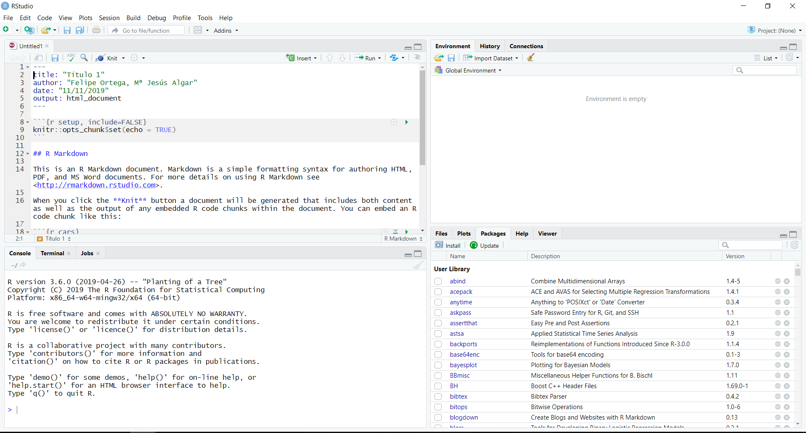
El panel superior izquierdo es el editor de código, donde se escriben los programas. Nuestro código podemos escribirlo en scripts, con el fin de poder utilizarlos en otros proyectos. En estos scripts se realiza un diagnóstioc de sintaxis con el siguiente código de colores: una cruz roja indica que hay un error de sintaxis, una exclamación amarilla indica que la variable o el objeto no se utiliza o que no se ha declarado, y un círculo azul nos ofrece la opción de solicitar información de ayuda sobre lo que estamos haciendo.
Justo debajo del editor de código se encuentra el panel de la consola, que es la parte principal de RStudio. Se trata de un intérprete interactivo de comandos en el que podemos escribir líneas de código. Las líneas de código pueden ser:
- Órdenes elementales (instrucciones) como una expresión o una asignación. Una expresión se evalúa, se imprime su valor y se pierde, es decir, no se puede utilizar posteriormente. Sin embargo, en una asignación, se evalúa la expresión, no se imprime el valor y éste se guarda en una variable, para poder ser utilizado posteriormente.
- Solicitudes de ayuda, por ejemplo:
help(solve)o, de forma alternativa,?solve. - Llamadas a funciones.
- Instrucciones que generen gráficas.
Si la sentencia produce una salida, al darle a intro esta salida se visualizará justo debajo de la línea de código y se habilitará la siguiente línea para introducir la siguiente instrucción, tal y como se observa en la siguiente figura.
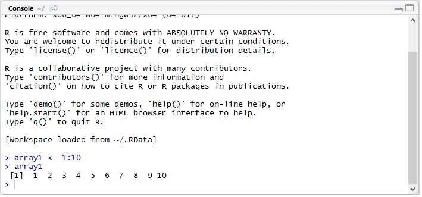
Como usuarios principiantes de R, podemos ver la consola como el espacio en el que vamos a teclear todas nuestras líneas de código. Sin embargo, conforme vayamos aconstumbrándonos al lenguaje y al entorno, nuestras líneas de código pasarán a estar en scripts que podremos abrir, ejecutar y modificar, tantas veces como queramos.
En la parte superior derecha está el panel de programación donde aparecen utilidades como el lisado de las variables de entorno, el historial de comandos previamente ejecutados, acceso a herramientas para control de versiones de código o conexiones a fuentes externas de datos (bases de datos, etc.). En la pestaña de Enviroment por cada objeto que creemos en nuestro código, su contenido lo podemos ver aquí de forma automática. Se pueden guardar los objetos del espacio de trabajo en un fichero con extensión .RData. También es posible recuperar los objetos creados en alguna sesión anterior sin más que cargar el correspondiente fichero con extensión .Rdata. Además, es posible limpiar los objetos que hay en el espacio de trabajo. Al conjunto de objetos que tengamos almacenados en cada momento se denomina espacio de trabajo (workspace).
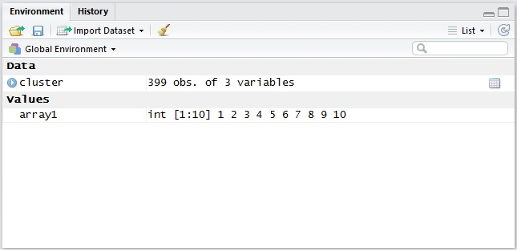
Una opción muy importe es la poder importar un Dataset. Después de elegir el formato en el que se encuentra el Dataset y su localización (ruta), en la ventana de código se abrirá una nueva pestaña en la que podremos ver el contenido del Dataset.
La pestaña History muestra el historial de todos los comandos introducidos. Toda instrucción que escribamos en la línea de comandos se carga aquí automáticamente. Se puede guardar el contenido de esta ventana en un fichero, con extensión .Rhistory. Por lo que, también podremos cargar (abrir) un fichero de históricos. Nos ofrece la posibilidad de poder recuperar las instrucciones y pasarlas a la consola o al script que tengamos abierto. Mediante el icono de la escoba, podremos borrar todo el histórico de instrucciones.
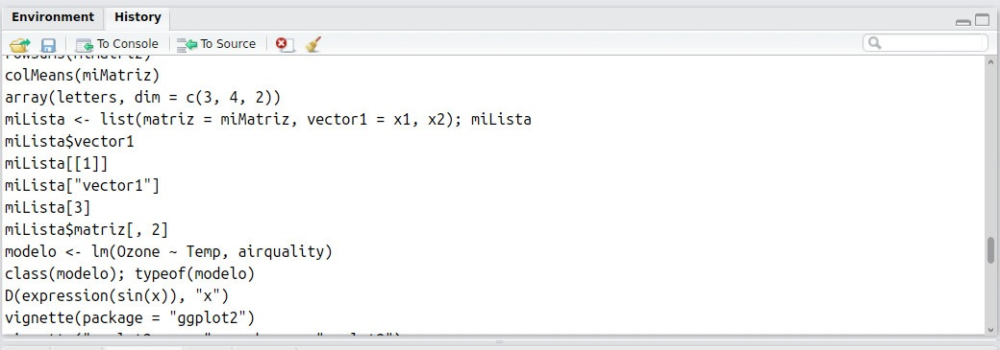
Por último, en la parte inferior derecha se encuentra el panel multifunción, donde está el navegador de archivos, el carrusel de gráficas, el gestor de paquetes, la ayuda en línea y el visualizador. En este panel podremos realizar diversas actividades: - Mediante la pestaña Files podemos explorar archivos en nuestro ordenador. - En la pestaña Plots irán apareciendo los diversos gráficos que vayamos construyendo. Podremos navegar a través de todas las representaciones que hayamos hechos, podremos aplicar zoom en ellas, exportarlas en diferentes formatos. También podremos eliminar individualmente las representaciones que tengamos o, incluso, eliminarlas todas. - En Packages podremos ver todos los paquetes que tenemos instalados en RStudio. Mediante el icono install podremos instalar nuevos paquetes, sin más que seleccionar el repositorio, tecleando el nombre del paquete e indicando la ruta donde se va a instalar. También se pueden actualizar los paquetes instalados y eliminar los que ya no nos interesen.
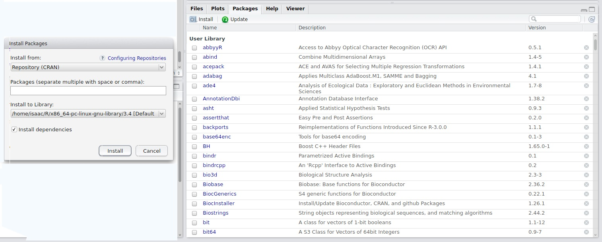
- Cuando se ejecute una instrucción que solicite ayuda sobre un determinado comando, esta ayuda se visualizará en la pestaña Help. También nos permite navegar a través de todos los topics de ayuda que hayamos realizado, así como poder imprimirlos. Incluso, es posible realizar una búsqueda de ayuda general. Para cualquier documento que estemos consultando, tiene un buscador para buscar dentro de él.
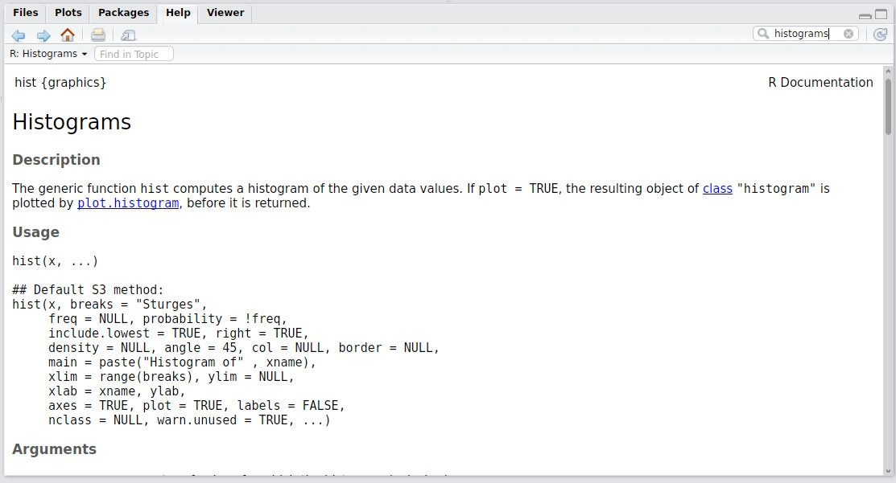
A continuación ofrecemos un resumen de comandos rápidos para trabajar en RStudio.
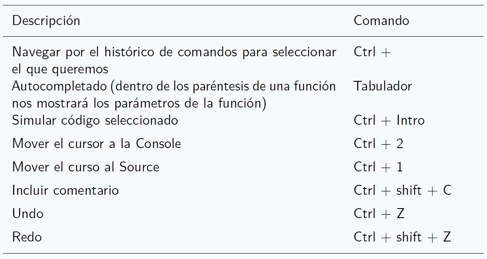
2.2 Proyectos de RStudio y directorio de trabajo
Los diferentes proyectos que vayamos haciendo los iremos guardando en diferentes directorios, esto es, en diferentes carpetas. En cada uno de estos directorios estarán localizados el conjunto de scripts y de paquetes que se usan en ese proyecto, los datos de entrada y los resultados analíticos y representaciones que hayamos hecho. A esto se le llama directorio de trabajo. En el menú Session tenemos la opción de establecer un determinado directorio como directorio de trabajo:
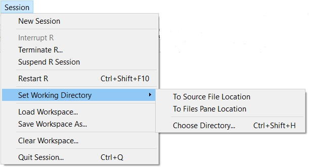
Veamos, mediante un sencillo ejemplo, como se trabaja con proyectos en RStudio. Lo primero es crear el proyecto, en el menú File tenemos la opción New Porject:
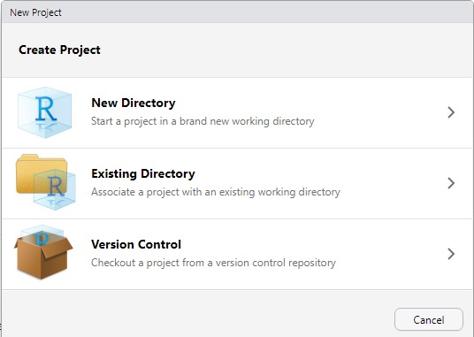
Haciendo click en New Directory, llegaremos a la siguiente ventana donde debemos seleccionar la opción New Project:
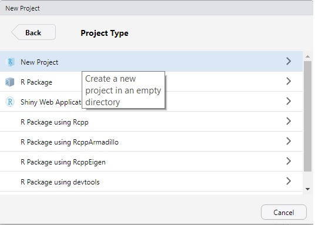
Finalmente indicamos el nombre que queremos darle a nuestro proyecto, por ejemplo: Poryecto1. Haciendo click en Create Project ya tendremos nuestro primer proyecto creado.
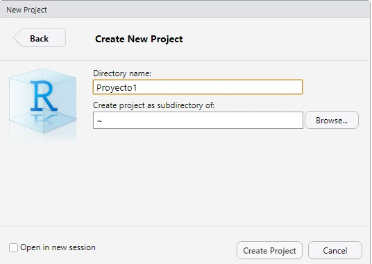
Ahora estamos en disposición de poder introducir nuestras líneas de código. Para ello, copiaremos las siguientes instrucciones en la consola. Conforme vayamos introduciendo las líneas de código, en la pestaña Environment irán apareciendo cada uno de los objetos que vamos creando junto con sus valores. Cuando introduzcamos las intrucciones que generan una representación gráfica, ésta aparecerá en la pestaña Plots.
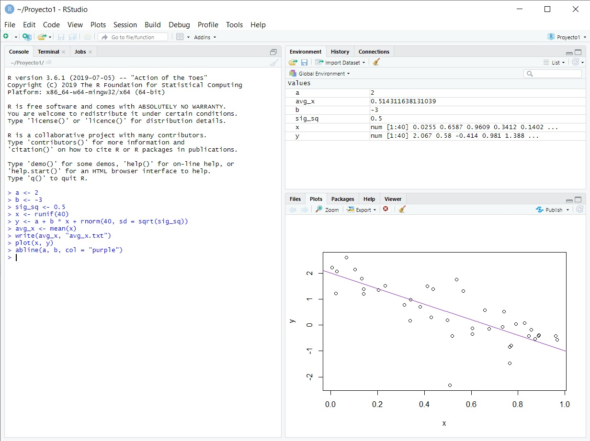
Si en la pestaña History pulsamos el icono Guardar y salvamos el código en un fichero con extensión .R (es decir, en un script), cuando volvamos abrir Rstudio podremos abrir el código de nuestro proyecto y modificarlo tantas veces como queramos. Más adelante (en otro taller) abordaremos alternativas más avanzadas para generar documentos que combinen contenido textual formateado con bloques de código ejecutable R, que pueden generar también resultados (numéricos, gráficos, tablas) que se integran directamente en el documento.
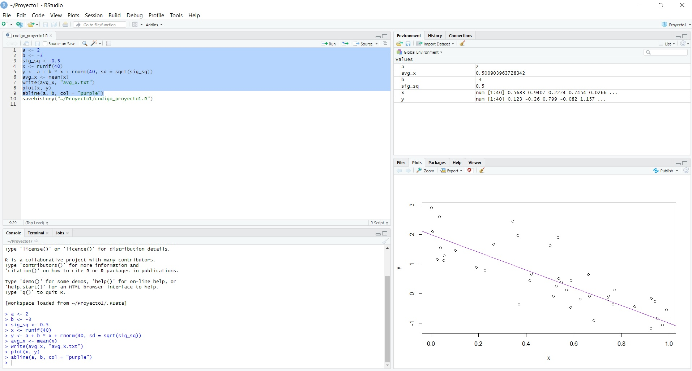
La creación de proyectos nos facilita el trabajo en RStudio, ya que nos permite tener juntos todos los ficheros de código, almacenar el histórico de comandos y guardar las variables de entorno, tal y como las dejamos al cerrar la sesión.